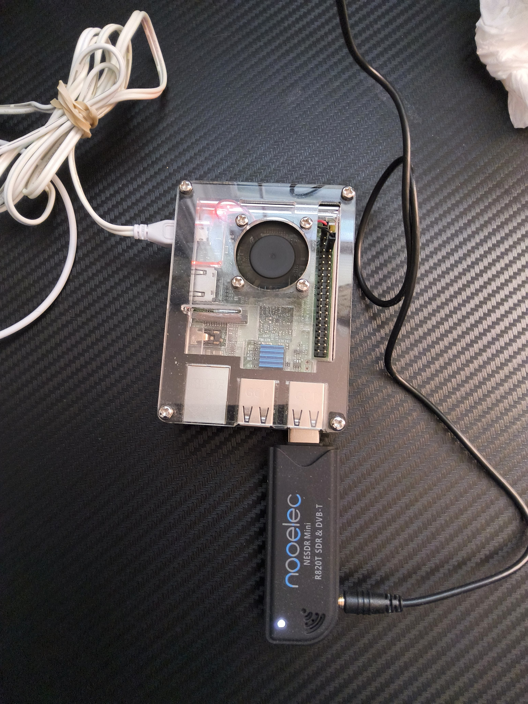
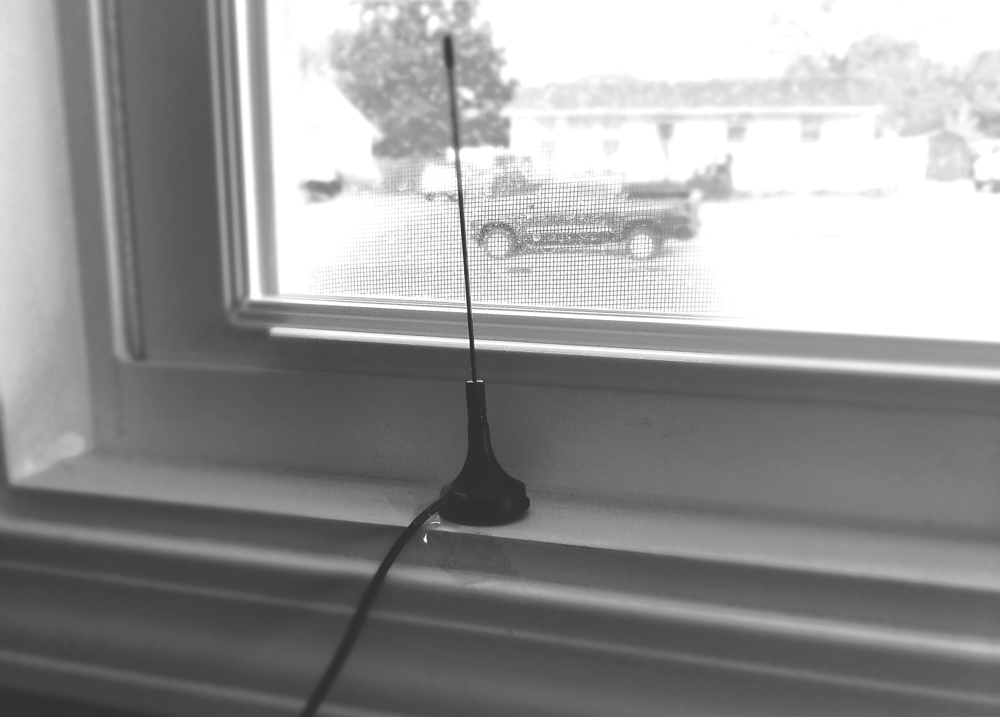

Ever wonder what is in the sky??
Two companies make this possible for residents to be aware
of what is visible in their skies: FlightAware and Flightradar24. Both of these services
utilize feeders that are located across the country to collect ADS-B and MLAT radio signals
produced by aircraft.
This past month I have created my own feeder to collect data in the Ashland, Ohio area.
Materials:
-Raspberry Pi 3 & Case
-16 GB Micro SD card
-Pi Aware software
-ADS Receiver (I used this one from Amazon: Nooelec ADS-B Reciever)
For more information on how to setup a FlightAware Node:
https://www.flightaware.com/adsb/piaware/build
To learn more about the FlightFeeder Network:
https://blog.flightaware.com/inside-the-flightaware-global-flightfeeder-network


